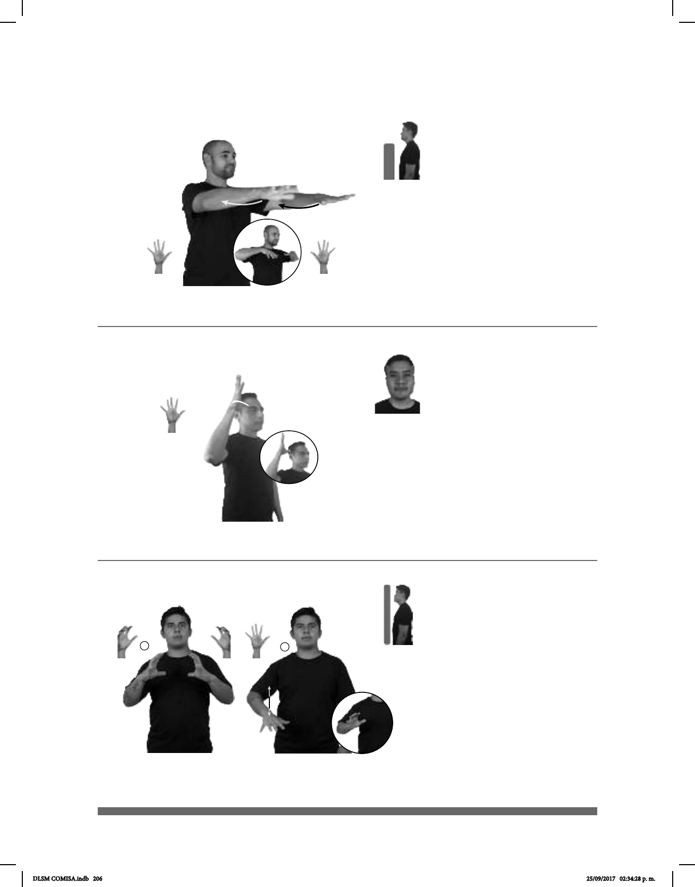

206
Seña: SS
5.1
Palmas hacia abajo.
A la altura del pecho.
Las manos se
mueven formando un arco hacia
adentro.
sust. m. Sala destinada
a conciertos, recitales, conferencias,
coloquios, lecturas públicas, etc.
Seña: SM
5.1
Palma hacia afuera.
La mano inicia sobre la
frente, del lado derecho y termina sobre
la sien.
La mano se mueve
formando un arco.
1. sust. m. Grupo que se
estableció en el altiplano de México y
sus alrededores durante el siglo XIII. 2.
Último tlatoani mexica de México
Tenochtitlan. 3. Estación del STC Metro
de la línea 1.
HAY CONFERENCIA
allá
ADENTRO AUDITORIO
Hay una conferencia en el auditorio.
_____muy_
ESA CULTURA AZTECA ANTIGUA
La cultura Azteca es muy antigua.
1
2
Seña: SC: I. SS; II. SM
I. 5.16; II. 5.1
I. Palmas hacia el centro; II. Palma
hacia bajo.
I. A la altura del pecho; II. Del pecho
a la cintura.
II. Recto repetidamente.
1. sust. m. Pelota de material elástico
el futbol, el basquetbol, etcétera. 2. sust. f. Bola de
materia elástica que le permite botar que se usa en
diversos juegos y deportes.
: Generalmente se utiliza el término
niños.
(5-G 42)
1
2
(5-G 41)
1
2 3
(5-G 40)
_________________o.i.p._
DÓNDE BALÓN DÓNDE
¿Dónde hay un balón?
DLSM COMISA.indb 206 25/09/2017 02:34:28 p. m.